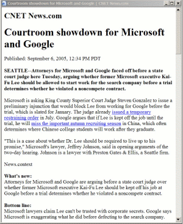
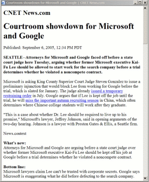

HTML Content Extractor is a special component to clean HTML pages from common noise such as ads, banners, navigations links and menus. It is automatic and does not require any user interaction during the extraction process.
This extraction can be useful if one wants to retrieve meaningful content from noisy web pages, for instance, news article from some Web news server. The following figures below show an example of an original news article (left) with many navigations menus, ads and extra boxes; and the same page after HTML Content Extractor cleanings (right).
|
|
 |
So,
what exactly this program does to clean noisy HTML documents and how
it detects key content to extract? Saying in a few words, it builds a
DOM tree of an HTML page and then applies predefined rules to clean it
from unnecessary elements and DOM segments. Sample of these rules is
shown in a properties file below. It guides HTML Content Extractor to
remove all HTML comments (1),
SCRIPT NOSCRIPT INPUT BUTTON LINK STYLE
SELECT EMBED OBJECT IMG IFRAME tags with their content
(2); delete all
attributes in TD TR TABLE BODY DIV LI UL
tags (5). To
recognize ads URLs and remove them (3)
there is a long list of common advertisement servers (over 22000 ads
servers). It is loaded during start up of the extractor and
every link is checked against it. Removing text empty elements (4)
is a way to detect and delete HTML nodes without any meaningful
textual information. For each such a node, a ratio number of linked
words to total number of words is calculated. If this ratio is more
then defined threshold linkTextRatio
then this node will be removed. This approach supposes to delete
navigation links like menus, as well as some advertisement links and
banners.
|
|
Additional parameter minNumOfWords
depicts a minimum number of unlinked words that should be in elements
like table or sell. In our case, any table or cell in a table that
has less then 15 words will be excluded from the final cleaned
document.
There is also a way to
perform additional removing of unnecessary URLs – download more
HTML pages form the same web server, compare their DOM trees with the
cleaned document and remove common elements and patterns. Partially
this idea is implemented as a removing common links feature (6).
This feature is still experimental, so use it carefully.
After you have tweaked keycontent.properties file according to your needs you can run kce.jar utility program from the kce distribution in the following ways:
Clean an HTML file. Specify a name html_file of an HTML file to clean and a character encoding charset of its content. If charset is omitted then ISO-8859-1 (latin-1) will be used by default. Result of the cleaning will be printed to standard output in UTF-8 encoding:
shell> java -jar kce.jar -clean html_file [charset]
Download and clean an HTML source from a URL. It is the same as the previous one except that source of the HTML page comes from a URL.
shell> java -jar kce.jar -clean url_to_clean [charset]
Start content extractor in a server mode. This will start a TANA server on specified port port_number.
shell> java -jar kce.jar -server -p port_number
Now you can send TANA messages to this server by TanaSend.jar program. Accepted TANA message should have the following key-value pairs:
|
Required |
Key |
Value |
Description |
|
yes |
cmd |
filter |
Command to apply key content extraction for specified content. |
|
yes |
content |
string |
HTML content to be filtered. |
|
no |
charset |
string |
Character encoding of the content. If it is not specified then ISO-8859-1 will be used by default. |
|
no |
url |
UTF-8 string |
URL in UTF-8 encoding of the content. |
|
no |
html |
true|false |
Request (do not request) result of the cleaning in HTML format. By default is true. |
|
no |
txt |
true|false |
Request (do not request) result of the cleaning in textual format. By default is false. |
Sample
requests to the server:
shell>
java -jar TanaSend.jar 12345 cmd:filter content:"some html
content to filter"
shell>
java -jar TanaSend.jar 12345 cmd:filter content:"some html
content to filter" charset:utf-8 html:false txt:true
url:http://some.url
HTML Content Extractor is
easy to integrate with your program. Main class that does all
processing is Kce. In
addition, it can accept any implementations of NodeFoundListener
interface. This is useful if you, for instance, want to
extract all links and titles from HTML pages in advance to cleaning.
This code snippet will help you to include HTML Content Extractor
library into your Java source code:
|
|
Copyright (c) 2005 by Vladimir Poroshin. All Rights Reserved.
This program is free software; you can redistribute it and/or modify it under the terms of the GNU General Public License as published by the Free Software Foundation; either version 2 of the License, or (at your option) any later version. This program is distributed in the hope that it will be useful, but WITHOUT ANY WARRANTY; without even the implied warranty of MERCHANTABILITY or FITNESS FOR A PARTICULAR PURPOSE. See the GNU General Public License for more details.